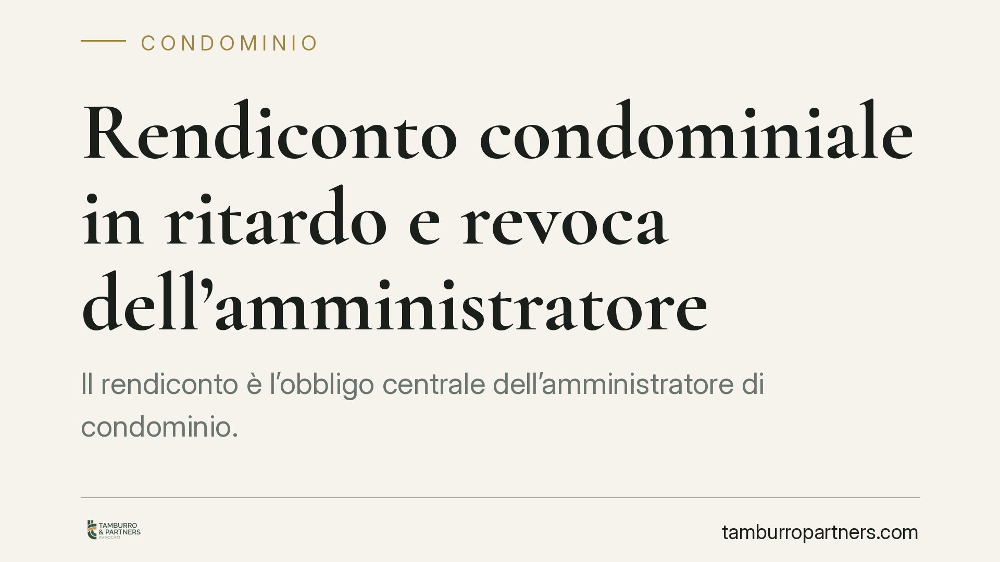

Rendiconto condominiale in ritardo e revoca dell'amministratore
Il rendiconto è l'obbligo centrale dell'amministratore di condominio. La sua presentazione oltre il termine di 180 giorni dalla chiusura dell'esercizio può integrare una grave irregolarità e aprire la strada alla revoca giudiziale. La giurisprudenza di merito tende a valorizzare la funzione del termine, ammettendo però la rilevanza di eventuali cause giustificative. Ecco cosa prevede la norma e come muoversi.

Il quadro normativo
L'obbligo di rendicontazione dell'amministratore trova la sua base nell'art. 1130, n. 10, del Codice civile, che impone di redigere il rendiconto condominiale annuale e di convocare l'assemblea per la relativa approvazione entro 180 giorni dalla chiusura dell'esercizio.
Questo obbligo si salda con l'art. 1713 c.c., dettato in tema di mandato: il mandatario deve rendere conto del proprio operato al mandante. L'amministratore agisce infatti come mandatario del condominio, e il rendiconto è lo strumento con cui i condomini verificano la corretta gestione delle somme comuni.
La revoca giudiziale è disciplinata dall'art. 1129, comma 12, c.c., che elenca le condotte qualificate come gravi irregolarità. Tra queste rientrano sia l'omesso rendiconto sia la mancata convocazione dell'assemblea per la sua approvazione nei termini di legge. Si tratta di fattispecie distinte, entrambe idonee, secondo la giurisprudenza, a fondare la richiesta di revoca davanti al Tribunale.
> Nota sulla fonte: la pronuncia di merito richiamata nella cronaca (indicata come Tribunale di Roma) non è al momento verificabile nei suoi estremi esatti (numero e anno). Ci limitiamo perciò a esporre il principio giuridico consolidato, senza attribuirlo a una sentenza dai riferimenti non confermati.
Perché il ritardo non si sana automaticamente
Il punto più delicato riguarda l'efficacia dell'adempimento tardivo. Presentare il rendiconto dopo la scadenza non elimina, di per sé, la rilevanza del ritardo già maturato.
La ragione è teleologica, cioè legata allo scopo della norma. Il termine di 180 giorni non è un semplice adempimento burocratico: serve a garantire ai condomini un controllo tempestivo sulla gestione, sulla cassa comune e sull'eventuale presenza di morosità o esposizioni debitorie. Consentire una sanatoria automatica tramite deposito tardivo svuoterebbe di significato la stessa previsione temporale.
Ciò detto, la non sanabilità non opera in modo assoluto. Il giudice valuta la gravità in concreto, tenendo conto di eventuali cause giustificative del ritardo (ad esempio impedimenti oggettivi documentati) e della sua entità. Un ritardo modesto e giustificato pesa diversamente da un'omissione prolungata e reiterata.
Cosa cambia per condomini e amministratori
Per i condomini, la pronuncia in materia conferma uno strumento concreto di tutela. Non occorre attendere l'inerzia collettiva: la giurisprudenza riconosce che anche un singolo condomino è legittimato a proporre ricorso per la revoca dell'amministratore in presenza di gravi irregolarità.
Per l'amministratore, il segnale è la centralità del rispetto dei termini. Il termine di 180 giorni dalla chiusura dell'esercizio va trattato come una scadenza rigida, da presidiare organizzando per tempo la contabilità e la convocazione assembleare. In caso di impedimento, è essenziale documentare le ragioni del ritardo, perché saranno oggetto di valutazione da parte del giudice.
È opportuno distinguere due profili spesso confusi: il rendiconto può essere pronto ma non approvato, oppure non essere stato nemmeno redatto o presentato. Sono situazioni diverse, che ricadono su previsioni distinte dell'art. 1129, comma 12, c.c.
Cosa fare in concreto
- Verificate le date rilevanti: individuate la data di chiusura dell'esercizio condominiale e calcolate con precisione il termine di 180 giorni per rendiconto e convocazione.
- Inviate solleciti tracciabili: in caso di inerzia dell'amministratore, formalizzate la richiesta di rendiconto tramite PEC o raccomandata, così da costituire una prova certa dell'inadempimento.
- Conservate la documentazione: raccogliete e archiviate verbali, comunicazioni, estratti conto condominiali e ogni evidenza utile a dimostrare il ritardo e la sua durata.
- Valutate il ricorso ex art. 1129 c.c.: qualora l'irregolarità persista, il ricorso al Tribunale è lo strumento tipico per ottenere la revoca giudiziale.
- Ponderate la gravità in concreto: prima di agire è opportuna una valutazione tecnica dell'entità dell'irregolarità e delle eventuali cause giustificative, per calibrare l'iniziativa più coerente con la situazione.
---
*Contributo informativo a cura di Tamburro & Partners Avvocati - Avv. Giuseppe Tamburro. Non costituisce parere legale.*
Ogni condominio ha una storia a sé.
Se gestisci un'amministrazione e vuoi un confronto su una specifica questione condominiale, scrivi allo studio. Ti rispondiamo entro un giorno lavorativo.